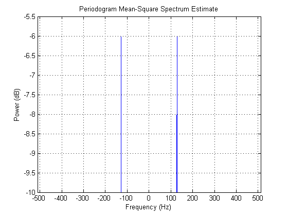
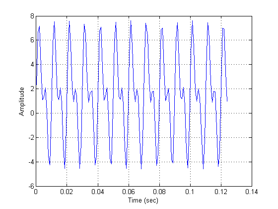
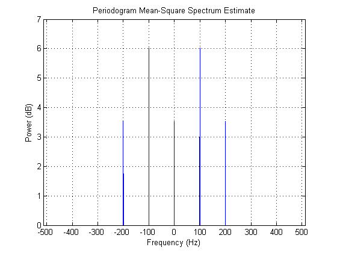
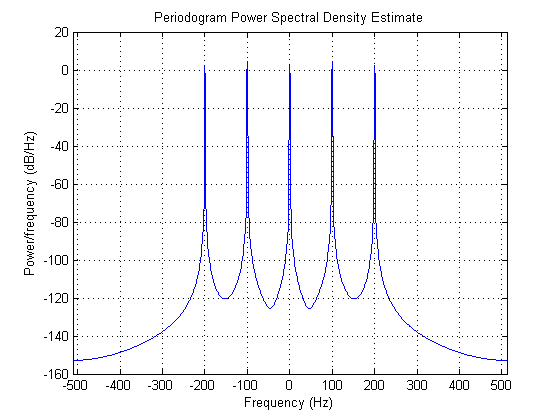

確定的周期信号のパワーの測定
このデモは、信号のパワー、特に確定的な周期信号に注目します。時間は連続ですが、周期的で確定的な信号は離散のパワー スペクトルを生成します。この理由は、特定の周波数で信号のパワーを測定するために、二乗平均 (パワー) を利用するためです。
信号の平均パワーを測定する方法の 2 つの例を示します。例では正弦波を使用し、1 オームの負荷インピーダンスであると仮定します。
目次
信号分類
通常、信号は、パワー信号、エネルギー信号、その他の信号の 3 つのカテゴリに分類されます。正弦波から生成される確定的な信号は、エネルギーが無限で平均パワーが有限のパワー信号の例です。ランダム信号の平均パワーも有限で、パワー信号に分類されます。過渡信号は、ゼロ振幅で開始および終了するエネルギー信号の例です。その他の信号には、パワー信号またはエネルギー信号の特徴がありません。
単一正弦波の理論的なパワー
最初の例では、1 V のピーク振幅と 128Hz の周波数成分を持つ正弦波信号の平均パワーを推定します。
Fs = 1024; t = 0:1/Fs:1-(1/Fs); A = 1; % Vpeak F1 = 128; % Hz x = A*sin(2*pi*t*F1);
時間領域で信号の一部を見てみましょう。
idx = 1:128; plot(t(idx),x(idx)); grid; ylabel('Amplitude'); xlabel('Time (sec)'); axis tight;

各複素正弦波の理論的な平均パワー (平均二乗) は A^2/4 で、この例では 0.25 または -6.02dB です。したがって、正の周波数と負の周波数のパワーを考慮すると、平均パワーは (A^2/4)*2 になります。
power_theoretical = (A^2/4)*2
power_theoretical =
0.5000
dB 単位で、正の周波数のみに含まれるパワーは次のとおりです。
10*log10(power_theoretical/2)
ans = -6.0206
単一正弦波のパワーの測定
信号の平均パワーを測定するために、ピリオドグラム スペクトル オブジェクトを作成し、その msspectrum メソッドを呼び出して、信号の平均二乗 (パワー) スペクトルを計算してプロットします。
h = spectrum.periodogram('hamming'); hopts = psdopts(h,x); % Default options set(hopts,'Fs',Fs,'SpectrumType','twosided','centerdc',true); msspectrum(h,x,hopts); v = axis; axis([v(1) v(2) -10 -5.5]); % Zoom in Y. set(gcf,'Color',[1 1 1])
プロットの拡大部分からわかるように、各複素正弦波の平均パワーは約 -6dB です。
PSD を使用した単一正弦波のパワーの推定
PSD 曲線の下の面積を積分しても、信号の平均パワーを計算できます。このためには、スペクトル オブジェクト (上記で定義した h) で psd メソッドを呼び出し、PSD データ オブジェクトを取得し、PSD データ オブジェクトで avgpower メソッドを呼び出します。
hpsd = psd(h,x,hopts);
plot(hpsd);
set(gcf, 'Color', [1 1 1])

このプロットでは、スペクトル プロットのピークの高さは、平均二乗スペクトル (MSS) のプロット時と異なることに注意してください。その理由は、パワー スペクトル密度 (PSD) の測定時に、曲線の下の面積 (平均パワーの測定値) が重要であるためです。これは、長方形近似を使用する avgpower メソッドを呼び出して、曲線の下の面積を積分し、平均パワーを計算することで検証できます。
power_freqdomain = avgpower(hpsd)
power_freqdomain =
0.5000
パーセルの定理によると、正弦波の合計平均パワーは、時間領域で算出された場合と周波数領域で算出された場合で等しくなければならないため、時間領域の信号を合計して信号の推定合計平均パワーを検証できます。
power_timedomain = sum(abs(x).^2)/length(x)
power_timedomain =
0.5000
複数正弦波の理論的なパワー
2 番目の例では、複数の周波数成分 (DC、100Hz、および 200Hz) のエネルギーを含んでいる信号の合計平均パワーを推定します。
Fs = 1024; t = 0:1/Fs:1-(1/Fs); Ao = 1.5; % Vpeak @ DC A1 = 4; % Vpeak A2 = 3; % Vpeak F1 = 100; % Hz F2 = 200; % Hz x = Ao + A1*sin(2*pi*t*F1) + A2*sin(2*pi*t*F2); % Let's look at a portion of our signal. idx = 1:128; plot(t(idx),x(idx)); grid; ylabel('Amplitude'); xlabel('Time (sec)'); set(gcf, 'Color', [1 1 1])
前の例と同様に、各複素正弦波の論理的平均パワーは A^2/4 です。信号の DC 平均パワーは、一定で、Ao^2 で求められるため、ピーク パワーと等しくなります。正の周波数および負の周波数のパワーを考慮すると、信号の合計平均パワー (各高調波成分の平均パワーの合計) は Ao^2 + (A1^2/4)*2 + (A2^2/4)*2 になります。
power_theoretical = Ao^2 + (A1^2/4)*2 + (A2^2/4)*2
power_theoretical = 14.7500
dB 単位で各固有周波数成分の平均パワーを計算すると、理論上の結果と以下の平均二乗スペクトル プロットが一致します。
[10*log10(Ao^2) 10*log10(A1^2/4) 10*log10(A2^2/4)]
ans =
3.5218 6.0206 3.5218
複数正弦波のパワーの測定
信号の平均パワーを測定するために、ピリオドグラム スペクトル オブジェクトを再度作成し、msspectrum メソッドを呼び出して、信号の平均二乗 (パワー) スペクトルを計算してプロットします。
h = spectrum.periodogram('hamming'); hopts = msspectrumopts(h,x); set(hopts,'Fs',Fs,'SpectrumType','twosided','centerdc',true); msspectrum(h,x,hopts); v = axis; axis([v(1) v(2) 0 7]); % Zoom in Y set(gcf, 'Color', [1 1 1])
PSD を使用した複数正弦波のパワーの推定
最初の例と同様に、取得した PSD 曲線の下の面積を積分し、信号の合計平均パワーを推定します。
hpsd = psd(h,x,hopts);
plot(hpsd);
set(gcf, 'Color', [1 1 1])
 特定の周波数成分のスペクトル プロットのピークの高さは、最初の例で示した理由で、平均二乗スペクトルのプロットと一致しない場合があります。
power_freqdomain = avgpower(hpsd)
power_freqdomain = 14.7500
また、信号の推定平均パワーを検証するには、パーセルの定理を呼び出し、時間領域で信号を合計します。
power_timedomain = sum(abs(x).^2)/length(x)
power_timedomain = 14.7500